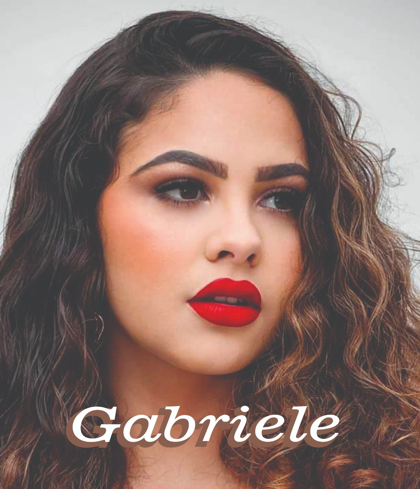

Gilberto Caires Pereira (Betim)
Gosta de ser chamado de "o bode"
Técnico em refrigeração;
Assistente técnico autorizado:
Dako;
Itatiaia;
Colormaq.
Esposa
Filhas (relacionamentos anteriores)

Reside atualmente em Montezuma-Mg.